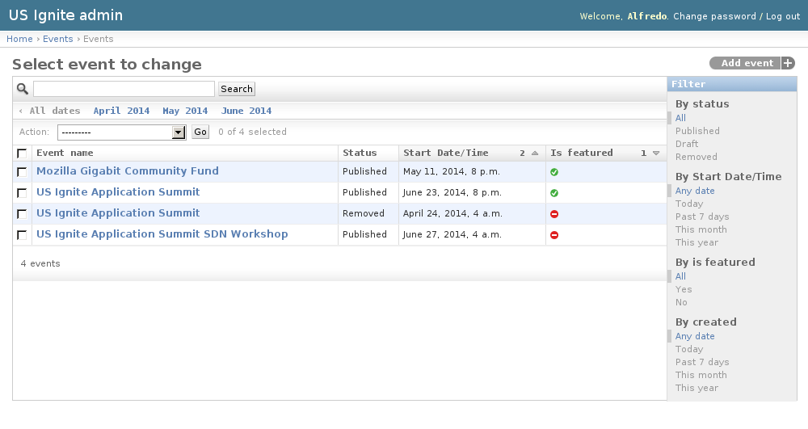
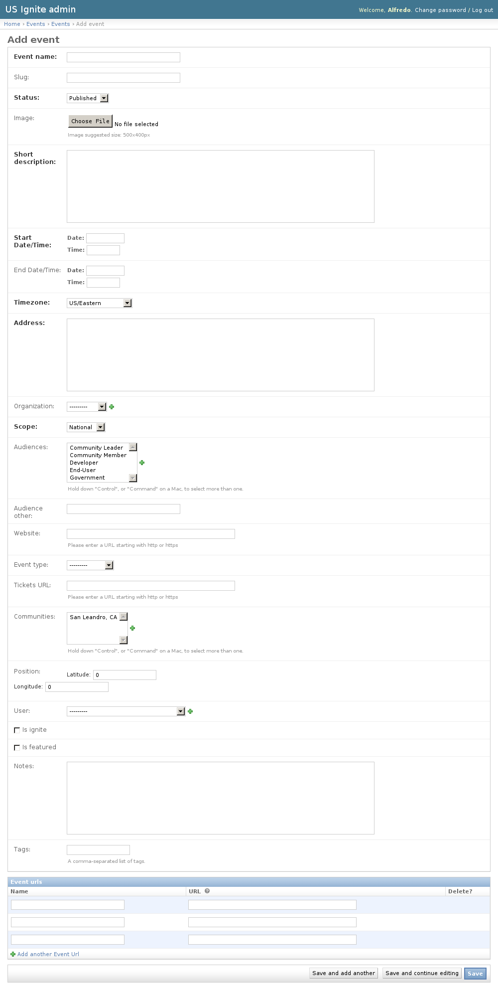
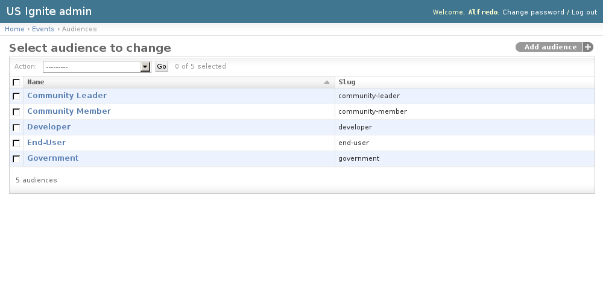
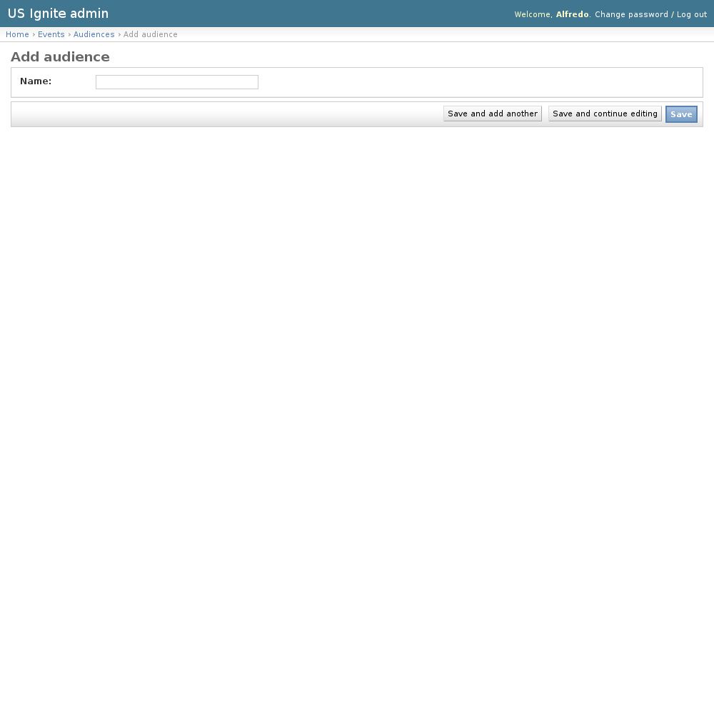

Events admin section
This section list the events section and its usage in the site.
View existing Events
The existing Events can be listed in the /admin/events/event/ URL. From this section the details of these Events can be inspected.
And the following actions can be performed:
- View the details of the Events.
- Filter the Events by: Status, Start date/time, Is featured? or Creation date.
- Search the Events by their contents.

Adding Events
Adding Events can be done from the front end of the application or the /admin/events/event/add/ URL.
The following fields are available to create Events:
- Event name: Required. Name of the event.
- Slug: Optional. Slug used for the event.
- Status: Required. Publication status of the event.
- Image: Optional. Image describing the event. Suggested size: 500x400px.
- Short description: Required. Short summary of the event.
- Start Date/Time: Required. Start date/time of the event.
- End Date/Time: Optional. End date/time of the event if applicable.
- Timezone: Required. US Timezone used for the event.
- Address: Required. Address of the event.
- Organization: Optional. Organization associated to this event.
- Scope: Required. Scope of the event: National or Regional.
- Audiences: Optional. Target audience for this event.
- Audience other: Optional. Other audience not listed in the previous option.
- Website: Optional. Fully qualified URL for the event. (URL starting with http or https).
- Event type: Optional. Category of the event.
- Tickets URL: Optional. Fully qualified URL to get tickets for this event.
- Communities: Optional. Communities associated to this event.
- Position: Optional. Location of this event in a map.
- User: Optional. Owner of this event.
- Is ignite?: Optional. Determines if the event is an Ignite event.
- Is featured?: Optional. Determines if the event should be shown as part of the featured list.
- Notes: Optional. Admin notes regarding this event, not public.
- Tags: Optional. A comma-separated list of tags.
- Event URLs: Extra URLs associated to this event.

Unpublishing / Removing Events
In case Events needs unpublishing it can be done from the detail admin view by changing the status of the Events to draft or removed
Note
The Events can be browsed in the /admin/events/event/ URL.
View existing Audiences
Audiences are a list of audiences receptive for the events, used in the select menu when creating one.
The existing Audiences can be listed in the /admin/events/audience/ URL. From this section the details of these Audiences can be inspected.
And the following actions can be performed:
- View the details of the Audiences.

Adding Audiences
Adding Audiences can be done from the /admin/events/audience/add/ URL.
The following fields are available to create Audiences:
- Name: Required. Name for the audience.

{kind=link}
{kind=link}
{kind=link}
{kind=link}